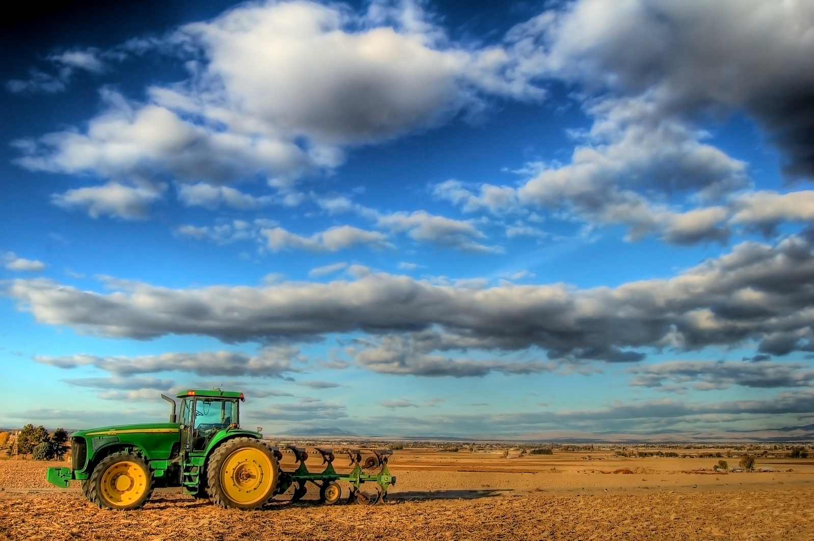

Weather Tracking System
This application helps farmers track weather conditions in real-time, providing crucial data to optimize irrigation and improve crop management. It also features tools for soil moisture monitoring and customizable alerts. Designed to enhance productivity and sustainability, the app supports informed decision-making to reduce water waste and improve farming efficiency.
Project Documentation
Technologies Used
The application is built using a combination of technologies, including weather data APIs, cloud computing services, and soil moisture sensors to provide real-time insights and optimize water usage.
Impact and Benefits
By using this app, farmers can make better-informed decisions to reduce water waste, optimize irrigation schedules, and improve crop yields, all contributing to sustainable farming practices.
Back to Projects